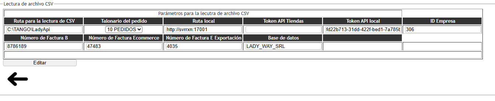

Módulo del Sistema
Configuración de directorio
- Versión: LadyApi001
- Fecha de actualización: 20/05/2025
- Propósito: Permite configurar los parámetros que serán usados en los módulos del sistema.
Descripción General
¿Qué hace este módulo?
Este módulo permite al usuario configurar los datos necesarios para que el sistema lea archivos CSV
desde una ubicación específica, y realice la carga de pedidos, clientes y artículos al sistema, además
tiene parámetros necesarios para otros procesos como de borrado de archivos CSV y copias de facturas,
etc.

A continuación, se explica para que sirven los campos:
- Ruta para la lectura de CSV
Descripción: Carpeta local donde la aplicación toma los archivos CSV para ser procesados
Ejemplo: C:\TANGO\LadyApi
Importancia: El sistema busca automáticamente los archivos CSV en esta ruta para procesarlos.
- Talonario del pedido
No se utiliza por el momento.
- Ruta local
Descripción: Dirección del servicio local que se va a usar para hacer las peticiones que usa la aplicación para funcionar.
Ejemplo: http://svrxn:17001
IImportancia: Permite la conexión con el sistema local para integrar los datos.
- ID Empresa
Descripción: Identificador interno de la empresa en donde hace referencia para el trabajo con la aplicación
Ejemplo:306
Importancia: Asegura que la información se registre en la empresa correcta. El dato se obtiene del sistema de tango gestión:
Ventas -->actualizaciones -->clientes -->apertura -->api
Allí se podrá ver los datos necesarios para la carga, se encontrarán el token para desarrollador y el ID empresa. También podrá ver el dato de la ruta local en la URL “: http://NOMBREDELSERVIDOR:17001”.
- Token API Tiendas
No se utiliza por el momento.
- Token API local
Descripción: Código de autenticación para conectar con la API local.
Ejemplo: xxxxxxx-xxxx-xxxxxxxx-xxxxxxx
- Número de Factura B
Descripción: Último número usado para la Factura tipo B.
Inicialización de la numeración: 1
Nota: El sistema incrementa este número automáticamente al generar nuevas facturas.
- Número de Factura Ecommerce
Descripción: Número de factura utilizado para el comercio electrónico
Inicialización de la numeración: 1
- Número de Factura E Exportación
Descripción: Número para la facturación tipo E (Exportación).
Inicialización de la numeración: 1
- Base de datos
Descripción: Nombre de la base de datos donde se almacenarán los registros.
Ejemplo: LADY_WAY_SRL
Importancia: Debe coincidir con la base utilizada por TANGO.
- Botón “Editar”
Función: Permite modificar los campos de configuración. Una vez editados, deben ser guardados para
que el sistema los utilice correctamente en los procesos y presionar el botón de editar.
Recomendaciones
Verifique que la ruta del CSV sea correcta y accesible desde la PC donde se ejecuta el sistema.
Confirme el nombre exacto de la base de datos antes de guardar.
IMPORTANTE
Muchos de los datos que se muestran en este módulo ya vienen preconfigurados para que la aplicación
pueda funcionar correctamente. Por eso, antes de modificar alguno de estos valores, se recomienda
consultar con el área de soporte técnico de ReAxion.
Algunos campos están directamente relacionados con procesos CSV, como la lectura de archivos CSV,
limpieza de archivos, la conexión con bases de datos o el uso de APIs. Cambiar alguno de ellos sin tener
certeza de cómo afecta al sistema puede generar errores o hacer que los archivos no se procesen
correctamente.
Esta advertencia es para evitar inconvenientes que podrían afectar el funcionamiento normal de la
aplicación. Si tenés dudas sobre algún campo o necesitas actualizar alguna configuración, lo mejor es
hablar con soporte para que te guíen paso a paso.